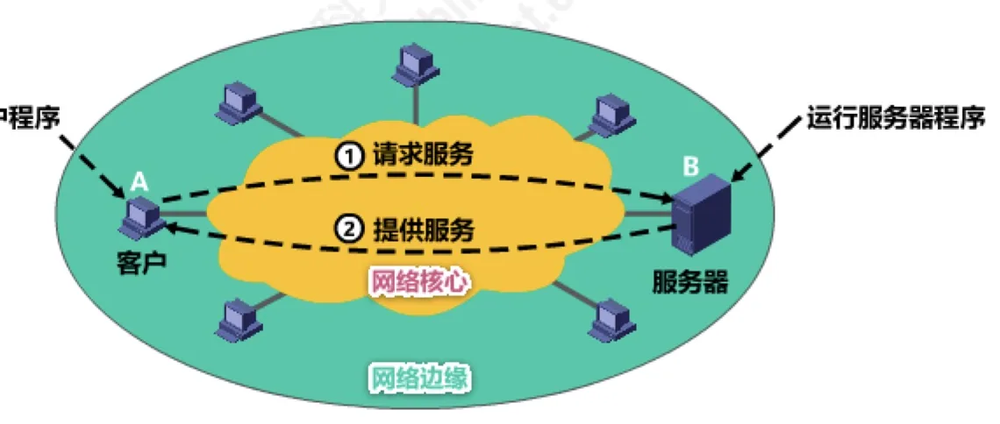

计算机通信与网络 · 第 6 章 应用层
6.2 客户—服务器方式和对等方式
网络应用程序运行在处于网络边缘的不同的端系统上，通过彼此之间的通信来共同完成某项任务。因此，开发一种新的网络应用，首先要考虑的问题就是：网络应用程序在各种端系统上采取什么样的组织方式、它们之间是什么关系。目前流行的主要有两种——客户/服务器方式（C/S 方式）和对等方式（P2P 方式）。本节把它们的工作方式、特点与适用场景讲清楚。
1. 客户/服务器方式（C/S 方式）
这里的客户和服务器，指的是通信中所涉及的两个应用进程。客户/服务器方式所描述的是进程之间服务和被服务的关系：
- 客户是服务请求方，服务器是服务提供方；
- 服务器总是处于运行状态，并等待客户的服务请求；
- 服务器具有固定端口号（例如 HTTP 服务器的默认端口号为 80），而运行服务器的主机也具有固定的 IP 地址——这两点正是客户能够找到服务器的前提。

C/S 方式是因特网上传统的、同时也是最成熟的方式，很多我们熟悉的网络应用采用的都是 C/S 方式，包括万维网 WWW、电子邮件、文件传输 FTP 等。
基于 C/S 方式的应用服务通常是服务集中型的，即应用服务集中在网络中比客户计算机少得多的服务器计算机上。这带来一个必然的问题：一台服务器计算机要为多个客户机提供服务，在 C/S 应用中常会出现服务器计算机跟不上众多客户机请求的情况。为此，在 C/S 应用中，常用计算机群集（或服务器场）来构建一个强大的虚拟服务器。
2. 对等方式（P2P 方式）
在 P2P 方式中，没有固定的服务请求者和服务提供者，分布在网络边缘各端系统中的应用进程是对等的，被称为对等方。对等方相互之间直接通信，每个对等方既是服务的请求者，又是服务的提供者。
目前，在因特网上流行的 P2P 应用主要包括 P2P 文件共享、即时通信、P2P 流媒体、分布式存储等。
与 C/S 的集中型相反，基于 P2P 的应用是服务分散型的：服务不是集中在少数几个服务器计算机中，而是分散在大量对等计算机中。这些计算机并不为服务提供商所有，而是为个人控制的桌面计算机和笔记本电脑，它们通常位于住宅、校园和办公室中。
P2P 方式有两个突出的优点：
- 可扩展性——这是它最突出的特性之一。因为系统每增加一个对等方，不仅增加了一个服务请求者，同时也增加了一个服务提供者，所以系统性能不会因规模的增大而降低；
- 成本优势——它通常不需要庞大的服务设施和服务带宽。正因如此，为了降低成本，服务提供商对将 P2P 方式用于应用的兴趣越来越大。
3. 两种方式的对比
| 对比项 | C/S 方式 | P2P 方式 |
|---|---|---|
| 进程角色 | 客户是请求方，服务器是提供方，角色固定 | 没有固定的请求者与提供者，每个对等方二者兼任 |
| 服务分布 | 服务集中型，集中在少数服务器上 | 服务分散型，分散在大量对等计算机上 |
| 典型应用 | 万维网 WWW、电子邮件、文件传输 FTP | P2P 文件共享、即时通信、P2P 流媒体、分布式存储 |
| 主要问题／优势 | 服务器可能跟不上大量客户的请求，常用计算机群集构建虚拟服务器 | 可扩展性好（请求者与提供者同增），成本低（无需庞大服务设施与带宽） |
理解这两种方式，是理解后面各节的基础：万维网（6.7 节）与电子邮件（6.6 节）都是典型的 C/S 应用，而 6.5 节的文件传送协议 FTP 同样是 C/S 方式——它需要固定的服务器端口号来接受连接。
本节小结
- 网络应用运行在网络边缘的不同端系统上，通过进程之间的通信共同完成任务；其组织方式主要有 C/S（客户/服务器）和 P2P（对等）两种。
- C/S 方式描述进程之间服务和被服务的关系：客户是服务请求方，服务器是服务提供方；服务器总是运行着并等待请求，具有固定端口号（如 HTTP 的 80）和固定 IP 地址。它是因特网上传统而成熟的方式，典型应用有万维网、电子邮件、FTP。
- C/S 应用的服务是集中型的，容易出现服务器跟不上大量客户请求的情况，常用计算机群集（服务器场）构建虚拟服务器来解决。
- P2P 方式中没有固定的请求者与提供者，各对等方直接通信、二者兼任；服务是分散型的，分散在大量个人控制的计算机上。
- P2P 的两大优势：可扩展性（每增加一个对等方，请求者与提供者同时增加，系统性能不随规模下降）与成本优势（不需要庞大的服务设施和服务带宽）。